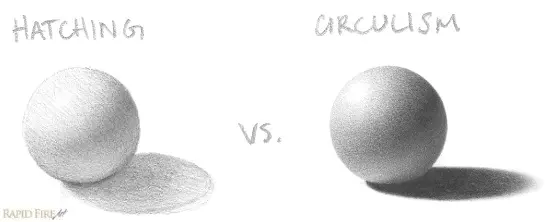
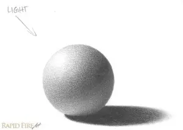

El sombreado es una técnica utilizada en el dibujo para representar la luz y la sombra en un objeto o escena. El sombreado puede ayudar a crear profundidad, volumen y realismo en un dibujo. En esta lección, aprenderemos algunas técnicas básicas de sombreado que puedes utilizar en tus dibujos.
Esta es la técnica de sombreado más común, ya que es fácil de aprender y permite cubrir más terreno en poco tiempo. Consiste en una serie de líneas que siguen una dirección general. Se puede usar para sombrear prácticamente cualquier cosa.
Al sombrear, inclina el lápiz hacia abajo, más cerca del papel, para que los trazos sean bien gruesos. Esto te permite minimizar los espacios, facilitando mucho la mezcla.
Si no tienes cuidado, esta técnica puede ser contraproducente. Las líneas rectas pueden hacer que algo como una esfera parezca plano, como en el ejemplo anterior. Estas líneas sin difuminar son ideales para sombrear elementos como acero cepillado, vetas de madera, etc.
El rayado cruzado consiste en superponer líneas en varios ángulos. Es ideal para dibujar telas como arpillera, piel texturizada (arrugada) y cualquier otra cosa que se te ocurra que presente este patrón. Para sombrear las zonas claras, aclara las líneas y sepáralas más. En las zonas sombreadas, oscurécelas y acércalas.
El circulismo es una técnica de sombreado que utiliza pequeños círculos super puestos para crear una textura uniforme. Esta técnica es ideal para sombrear áreas grandes y planas, como cielos o paredes. Para sombrear las zonas claras, utiliza círculos más pequeños y separados. En las zonas sombreadas, utiliza círculos más grandes y juntos.
¡Esta técnica requiere mucho tiempo, pero los resultados son sorprendentes!
Aplica este método usando un lápiz afilado para pieles con textura y arrugas o usa un lápiz sin punta para pieles lisas, ya que será más fácil de difuminar.